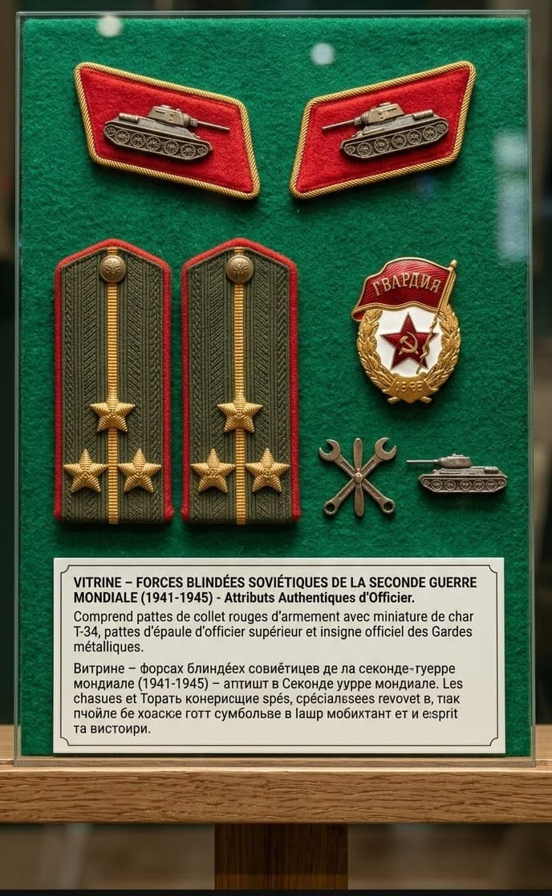
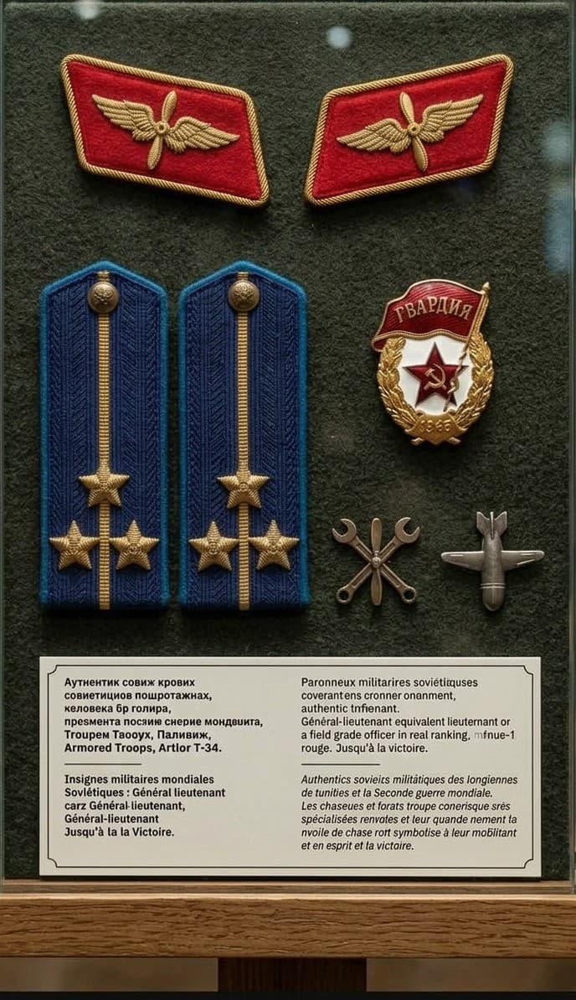
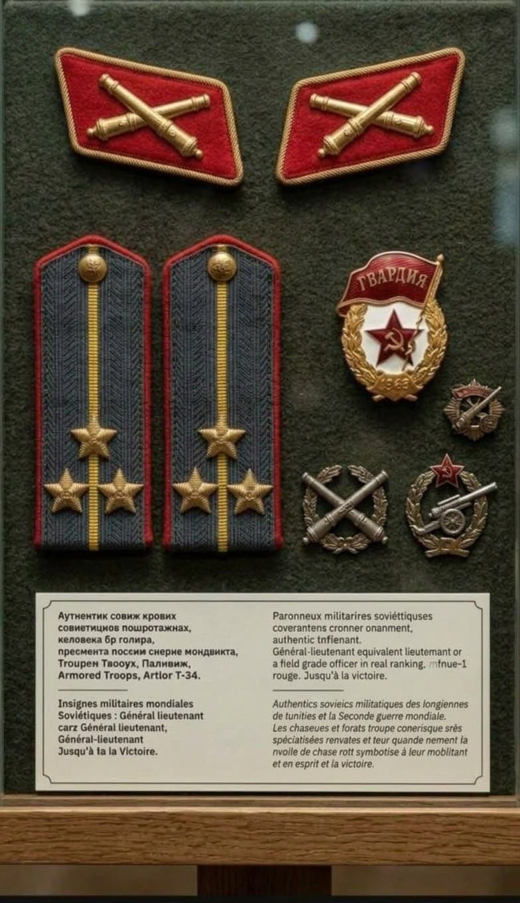

Introduction
Durant la Grande Guerre Patriotique (1941–1945), l’Armée Rouge s’appuie sur un système strict d’attributs militaires pour identifier ses combattants. Contrairement aux écussons en tissu, la tradition soviétique repose sur de véritables insignes métalliques fixés sur les pattes de collet, les pattes d'épaule (pogoni) réintroduites en 1943, ainsi que sur des badges honorifiques portés sur la poitrine.
Infanterie
L’infanterie forme le cœur des forces soviétiques engagées sur le front de l'Est. Ses soldats arborent l’étoile rouge émaillée sur leur coiffure ainsi que les attributs dorés fixés sur les pattes de collet et d'épaule réglementaires.

Forces Blindées
Fer de lance des grandes contre-offensives, les équipages de chars (T-34, KV-1, IS-2) sont identifiables par le symbole du char miniature. Ces attributs métalliques étaient fièrement portés sur les épaules et collets des blindés soviétiques.

Aviation Soviétique (VVS)
Les pilotes et techniciens de la VVS portent l'emblème de l'hélice dorée entourée d'ailes stylisées. Leurs pattes d'épaule se distinguent par leur couleur bleu céleste bordée du passepoil réglementaire.

Artillerie
Considérée comme la force de frappe majeure de l'Armée Rouge, l'artillerie utilise le symbole historique de deux canons croisés en métal, portés aussi bien par les canonniers que par les unités de lance-roquettes Katyusha.

Génie & Transmissions
Soutien indispensable du front, les sapeurs et techniciens du génie portent des haches et pelles croisées, tandis que les spécialistes des transmissions arborent l'insigne aux éclairs ailés.

Unités de la Garde
Le titre de « Garde » récompensait les unités d'élite s'étant illustrées héroïquement au combat. Les soldats de ces régiments portaient sur la poitrine le célèbre badge métallique émaillé Gvardiya arborant le drapeau rouge.